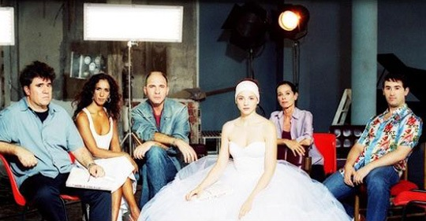

阿莫多瓦的片子，每一部我都觉得充满诗意，我喜欢里面西班牙特有的绚烂色调，喜欢萦绕其中的强烈的音乐感受。或许源于他对于节奏的掌控拿捏每每恰到好处吧，看他的片子也不会觉得冗长。而他对于女性题材的偏爱让我更加喜欢他的电影。他的影片，时而如西班牙红酒般浓烈，比如《回归》；时而如默片般沉静，比如《对她说》。 第一次看《对她说》还是在大学，那时几个女生一起挤在宿舍看这部片子，看是看完了，除了觉得画面和音乐美之外，就别无其它。那时的自己太浮躁。第二次看也就是在几个礼拜之前，陪小树看，内心沉静许多，也终于发现Caetano Veloso的《Cucurrucucu Paloma》就是在王家卫《春光乍泄》里同样出现过的那首歌。(参见另外一篇文章鸽子歌) 两个男人的友谊以及他们缺失的爱情，在安达卢西亚的美好风景中沉默地忧伤着。对她说，即使她无法回答。对她说，即使她醒来我已不在。他们的爱情，单有一方的执着，却缺失了女人的回应。孤独灵魂的絮絮低语就这样在默剧的里里外外延伸着。 看完电影，有几个画面你一定是忘不了的。女人在舞台上幽灵般地舞蹈，男人在台下沉默地哭泣；《Cucurrucucu Paloma》的歌声在安静的人群中回绕，和医院里男人的絮絮低语是如此相近；默剧《缩小的情人》里，缩小的男人最终钻进了女人的身体，将自己的全部奉献给了所爱的女人。影片中的男人于是也将自己献给了昏迷的女人，牺牲了自己，同时也真正换来了后者的苏醒。 结局意外而完美，昏迷的女人终于醒来，对着男人浅浅一笑，尽管这个他已经不是那个执着地对她说的男人，但我们突然相信，她睡着的时候一定也感觉到了那些灵魂的絮絮低语。
